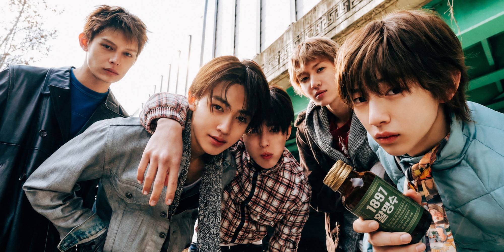

Date : 2026-08-02
CORTIS × KOD
새로운 문화 코드를 완성하다
동화약품, CORTIS를 활명수 신규 캠페인 모델로 발탁
브랜드 필름·디지털 콘텐츠·참여형 프로모션 순차 공개

동화약품은 활명수 1897의 새로운 캠페인 모델로 CORTIS를 발탁하고, 신규 브랜드 캠페인 ‘CORTIS × KOD’를 공식 공개했다고 밝혔다.
이번 캠페인은 1897년부터 이어져 온 활명수의 브랜드 헤리티지를 오늘날의 감각으로 새롭게 해석하고, 식사의 마지막 순간을 완성하는 하나의 문화 코드로 KOD를 제안하기 위해 기획됐다. 오랜 시간 소비자들의 일상과 함께해온 활명수의 상징성을 유지하면서도, 젊은 세대가 보다 자연스럽고 감각적으로 브랜드를 경험할 수 있도록 캠페인 전반에 새로운 비주얼과 디지털 인터랙션을 적용한 것이 특징이다.
동화약품은 이번 캠페인을 통해 KOD를 단순한 제품명이나 광고 메시지가 아닌, 식사의 흐름을 완성하는 새로운 라이프스타일 코드로 확장하고자 했다. 특히 식사를 마친 뒤 자연스럽게 이어지는 순간에 KOD를 배치함으로써, 제품의 기능적 인지를 넘어 하나의 문화적 습관과 브랜드 경험으로 연결하는 데 초점을 맞췄다.
새로운 캠페인 모델로 발탁된 CORTIS는 자유롭고 역동적인 이미지, 개성 있는 스타일, 글로벌 팬덤과의 높은 소통력을 바탕으로 KOD가 지향하는 젊고 생동감 있는 브랜드 방향성과 잘 부합한다는 평가를 받았다. 동화약품은 CORTIS가 지닌 특유의 에너지와 친근한 분위기가 활명수 1897의 전통적인 이미지에 새로운 리듬을 더하고, 브랜드를 보다 확장된 방식으로 전달할 수 있을 것으로 기대하고 있다.
공개된 메인 캠페인 비주얼은 CORTIS 멤버들이 함께 이동하고, 뛰고, 모이고, 장난치는 순간을 중심으로 구성됐다. 정형화된 제품 광고의 연출보다는 멤버들 사이의 자연스러운 호흡과 즉흥적인 움직임을 강조해, 브랜드의 활기와 속도감을 직관적으로 보여준다. 여기에 활명수 1897 제품의 강한 컬러와 패키지 디자인을 시각적 중심 요소로 배치해 CORTIS의 자유로운 이미지와 KOD의 브랜드 아이덴티티가 하나의 장면 안에서 조화를 이루도록 했다.
캠페인 슬로건은 ‘새로운 문화 코드를 완성하다’로, 익숙한 식사 경험에 KOD라는 새로운 마무리를 더한다는 의미를 담았다. 캠페인 전반에서는 식사, 이동, 휴식, 친구들과의 모임 등 누구나 경험할 수 있는 일상의 장면 속에 KOD를 배치해 브랜드 메시지를 자연스럽게 전달한다.
메인 브랜드 필름은 CORTIS 멤버들이 각자의 방식으로 하루를 보내는 장면에서 시작해, 하나의 공간으로 모이고 KOD를 매개로 같은 순간을 공유하는 흐름으로 전개된다. 빠른 화면 전환과 역동적인 카메라 워크, 거칠고 생동감 있는 질감, 반복적으로 등장하는 제품 오브제를 통해 KOD만의 시각적 리듬을 구축했다. 또한 광고 후반부에는 ‘Finish? Find Your KOD!’ 메시지를 배치해 식사의 마지막 순간과 브랜드 경험을 직접적으로 연결했다.
동화약품은 메인 브랜드 필름 공개를 시작으로 멤버별 캠페인 이미지, 광고 촬영 비하인드, 인터뷰 영상, 미공개 스틸, 짧은 숏폼 콘텐츠 등을 순차적으로 선보일 예정이다. 특히 촬영 현장의 자연스러운 분위기와 멤버들 간의 호흡을 담은 비하인드 콘텐츠는 공식 프로모션 사이트와 브랜드 SNS 채널을 통해 공개된다.
이번 캠페인과 함께 새롭게 오픈한 활명수 1897 공식 프로모션 사이트는 브랜드 소개, 제품 정보, 캠페인 콘텐츠, 구매 연결, 팬덤 참여형 콘텐츠를 하나의 흐름으로 구성했다. 사용자는 캠페인 비주얼과 브랜드 필름을 감상하는 데 그치지 않고, 직접 화면을 탐색하고 콘텐츠를 선택하면서 KOD의 메시지를 경험할 수 있다.
사이트 내 ‘Taste KOD’ 영역에서는 광고에 등장한 주요 장면과 캠페인 세계관을 확장한 콘텐츠를 확인할 수 있다. 일부 콘텐츠는 코드 입력, 이미지 선택, 카드 인터랙션 등 간단한 참여 과정을 거쳐 공개되도록 구성해 사용자의 체류와 반복 방문을 유도한다. 또한 미공개 이미지와 영상, 멤버별 콘텐츠를 순차적으로 업데이트해 캠페인 기간 동안 지속적인 관심이 이어지도록 설계했다.
구매 전환을 위한 기능도 강화했다. 제품 상세 정보와 구매 페이지를 캠페인 콘텐츠와 자연스럽게 연결하고, 콘텐츠 감상 이후 별도의 복잡한 이동 없이 제품 구매로 이어질 수 있도록 주요 구간에 구매 버튼을 배치했다. 이를 통해 광고, 브랜드 경험, 제품 정보, 구매가 하나의 흐름 안에서 연결되도록 구성했다.
동화약품은 캠페인 공개를 기념해 다양한 참여형 프로모션도 함께 진행할 예정이다. 제품 구매 인증 이벤트, SNS 공유 이벤트, 캠페인 콘텐츠 참여 이벤트 등을 통해 소비자가 직접 KOD를 경험하고 자신만의 방식으로 브랜드 메시지를 확산할 수 있도록 할 계획이다. 일부 이벤트 참여자에게는 캠페인 비주얼을 활용한 한정 디지털 콘텐츠와 특별 제작 굿즈가 제공된다.
캠페인 관계자는 “CORTIS는 각 멤버의 개성이 뚜렷하면서도 함께 있을 때 강한 에너지와 시너지를 보여주는 팀”이라며 “이러한 특징이 오랜 시간 이어져 온 활명수의 헤리티지에 새로운 감각을 더하고자 한 이번 캠페인의 방향성과 잘 맞았다”고 말했다.
이어 “이번 캠페인은 단순히 새로운 모델을 통해 제품을 알리는 데 그치지 않고, KOD를 식사의 마지막 순간을 상징하는 새로운 문화 코드로 제안하는 데 의미가 있다”며 “브랜드 필름, 디지털 콘텐츠, 프로모션 사이트, 참여형 이벤트를 통해 소비자들이 각자의 방식으로 KOD를 발견하고 경험하기를 기대한다”고 덧붙였다.
동화약품은 앞으로도 CORTIS와 함께 다양한 형식의 후속 콘텐츠를 선보이며 캠페인을 지속적으로 확장해 나갈 예정이다. 메인 광고뿐 아니라 멤버별 콘텐츠, 촬영 비하인드, 인터뷰, 팬 참여형 콘텐츠 등을 통해 활명수 1897과 KOD의 새로운 브랜드 이미지를 단계적으로 구축할 계획이다.
한편 활명수 1897은 오랜 시간 이어온 브랜드의 상징성과 정체성을 바탕으로 새로운 세대와의 접점을 넓히고 있다. 이번 ‘CORTIS × KOD’ 캠페인은 전통과 현재, 제품과 콘텐츠, 브랜드와 팬덤을 하나의 경험으로 연결하며 활명수 1897의 새로운 방향성을 보여주는 출발점이 될 것으로 기대된다. ‘CORTIS × KOD’ 캠페인의 브랜드 필름과 관련 콘텐츠는 활명수 1897 공식 프로모션 사이트 및 공식 SNS 채널에서 확인할 수 있다.